Headliner: Service and Repair
Headliner Removal/InstallationSpecial Tools Required
KTC trim tool set SOJATP2014 *
* Available through the American Honda Tool and Equipment Program
SRS components are located in this area. Review the SRS component locations, precautions and procedures before doing repairs or service.
NOTE:
- Put on gloves to protect your hands.
- Take care not to bend or scratch the trim and panels.
- Use the appropriate tool from the KTC trim tool set to avoid damage when prying components.
1. Make sure you have the antitheft codes for the audio or the navigation system, then write down the audio presets.
2. Disconnect the negative cable from the battery, and wait at least 3 minutes before beginning work.
3. Remove these items:
- 2-door:
- A-pillar trim, both sides
- Ceiling light
- Front seat belt upper anchor, both sides
- Rear side trim panel
- Quarter pillar trim
- Grab handles, two places
- 4-door:
- A-pillar trim, both sides
- Ceiling light
- Front seat belt upper anchor, both sides
- B-pillar lower trim
- B-pillar upper trim, both sides
- C-pillar upper trim, both sides
- Grab handles, four places
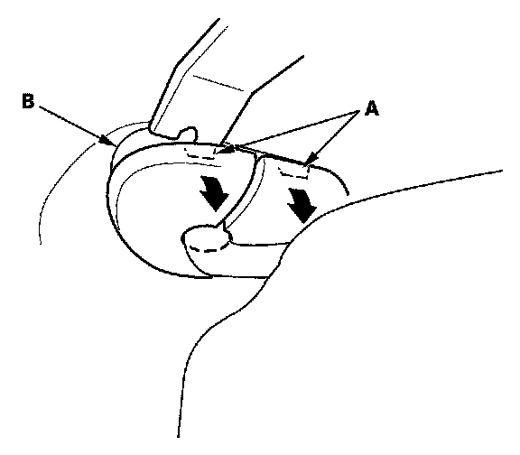
4. From both sides, using a trim tool, release the tabs (A) from the bracket (B).
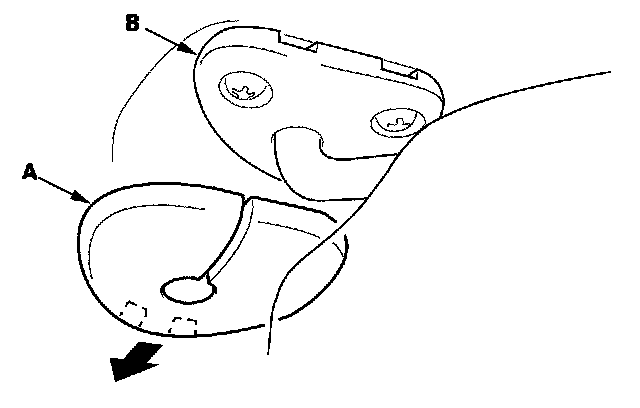
5. Remove the sunvisor cap (A) from the bracket (B). Turn the cap, and remove it.
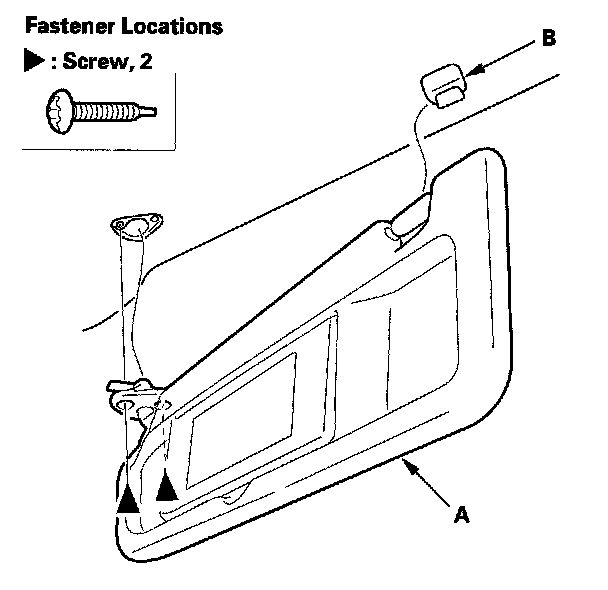
6. From both sides, remove the sunvisor (A).
1. Remove the sunvisor from the body and holder (B).
2. Using a T25 TORX bit, remove the screws.
3. Remove the sunvisor from the body.
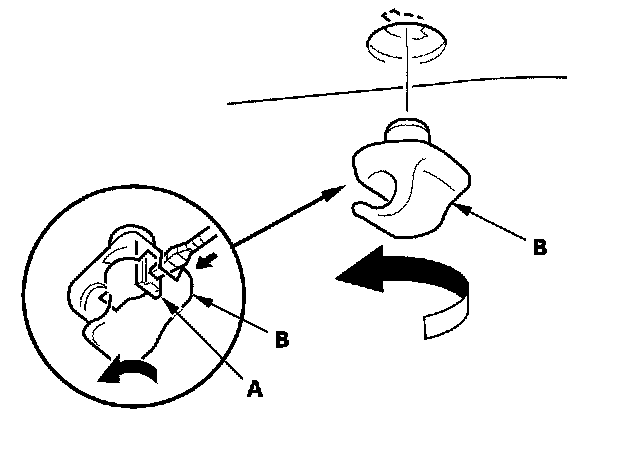
7. Using a flat-tip screwdriver, push the hook (A), and turn the holder (B) 90 degrees, then pull it out.
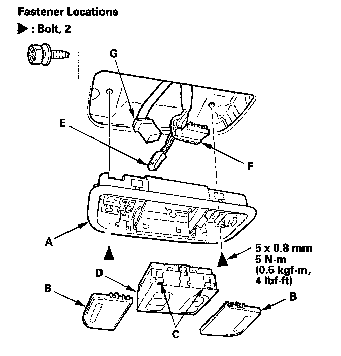
8. Remove the map light assembly (A).
1. Remove the lenses (B).
2. Remove the bolts.
3. If equipped, release the four tabs (C), then pull out the moonroof switch (D) or the navigation microphone.
4. Disconnect the front individual map light connector (E). If equipped, disconnect the moonroof switch connector (F) and the navigation microphone connector (G).
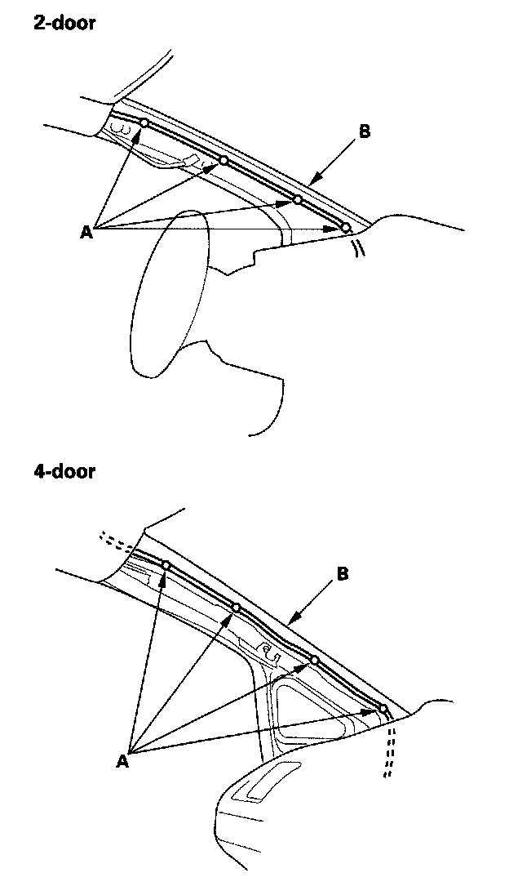
9. Without moonroof. Detach the harness clips (A) from the A-pillar (B).
10. Without moonroof: Remove the driver's dashboard undercover.
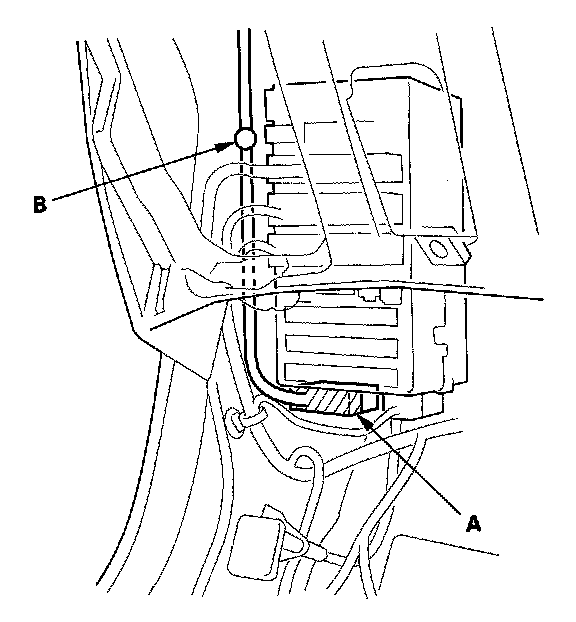
11. Without moonroof: From under the dash, disconnect the roof wire harness connector (A), and detach the harness clip (B).
12. Remove the center console.
13. Slide the front seat all the way back, and recline the seat-back fully.
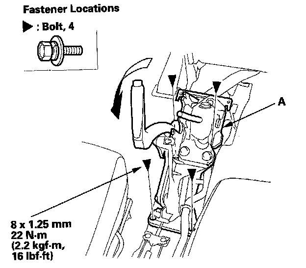
14. 4-door: Remove the bolts securing the parking brake base frame (A) and lay it down as needed.
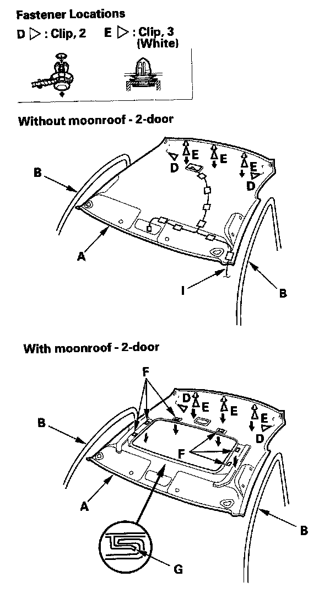
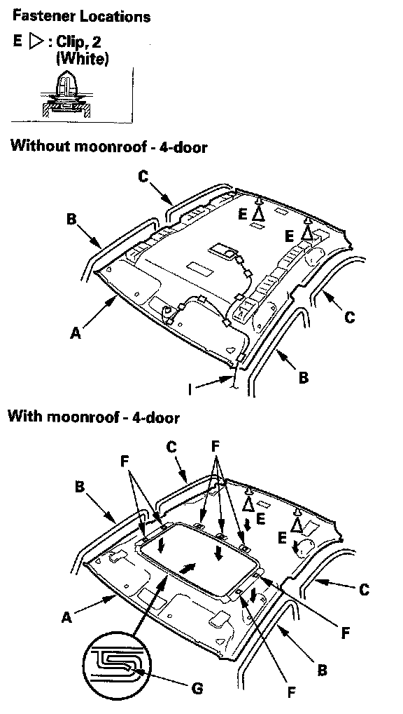
15. Lower the headliner (A).
1. Remove the front door opening seals (B), and rear door opening seals (C) from each roof portion.
2. 2-door: Release the clips (D).
3. With the help of an assistant, detach the rear clips (E) by pulling the rear portion of the headliner down.
4. With moonroof: Release the velcro fasteners (F) by lowering the headliner.
5. With moonroof: Release the hooks (G) of the moonroof by moving the headliner rearward.
16. Lower the front of the headliner below the steering wheel. Rotate the liner, and pull it along with the roof wire harness (I) out through the passenger's front door. Do not bend the liner.
Bending the liner will crease and damage it.
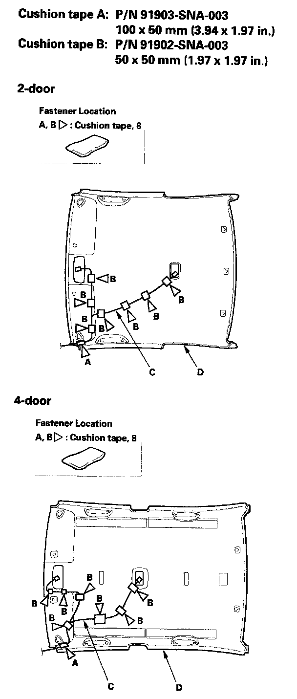
17. If necessary, remove the cushion tape (A, B) fastening the roof wire harness (C) to the headliner (D), then remove them from the headliner.
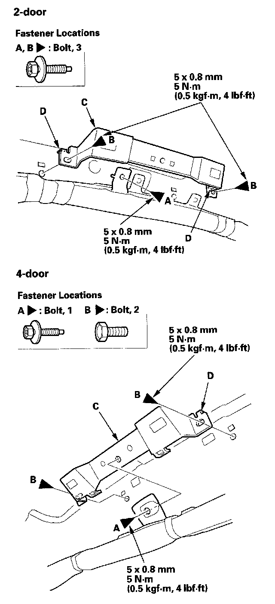
18. If necessary, remove the side curtain airbag mounting bolt (A) and grab handle bracket mounting bolts (B), then remove the grab handle bracket (C) from each side by releasing the hooks (D).
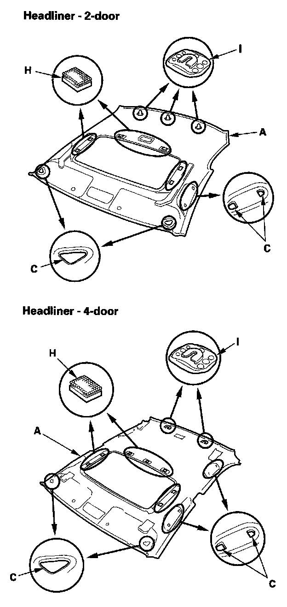
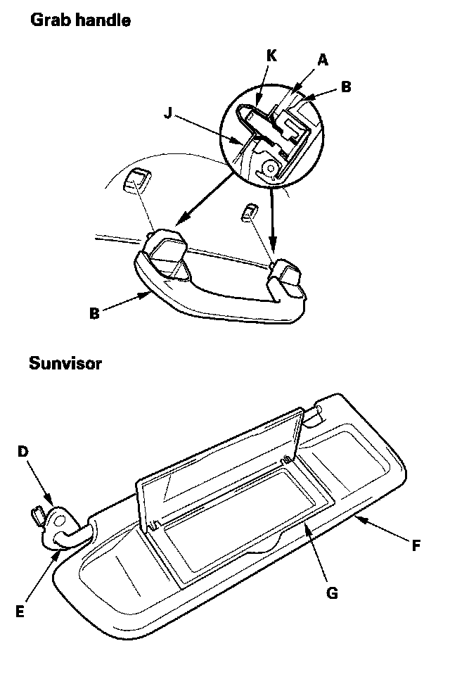
19. Install the headliner in the reverse order of removal, and note these items:
- If the side curtain airbag has deployed, replace the headliner and removed trim pieces with new ones.
- To prevent the side curtain airbags from deploying improperly and possibly causing injury, inspect removed pieces and replace them if they have any of these types of damage:
- Any crease or tears in the headliner (A)
- Any cracks or breakages in the grab handle (B)
- Any damages around the grab handle holes (C) or sunvisor holes in the headliner
- Any cracks in the sunvisor stay base (D)
- Any bends or cracks in the sunvisor stay shaft (E)
- Any cracks in the sunvisor base (F)
- Any cracks or breakages in the vanity mirror base (G)
- Any velcro fasteners (H) and clip bases (I) which have come off the headliner
- When installing the grab handle, push on the handle against the bracket (J) until the clips (K) snap into place securely.
- Check if the clips are damaged or stress-whitened, and if necessary, replace them with new ones.
- Replace the removed cushion tape with new ones.
- Check that both sides of the headliner are securely attached to the trim.
- Make sure the headliner overlaps the trim pieces correctly.
- When reinstalling the headliner through the front passenger's door opening, be careful not to fold or bend it. Also, be careful not to scratch the body.
- Reconnect the negative cable to the battery.
- Set the clock.
- Enter the anti-theft code for the audio or the navigation system, then enter the audio presets.
- Check for any DTCs that may have been set during repairs, and clear them.